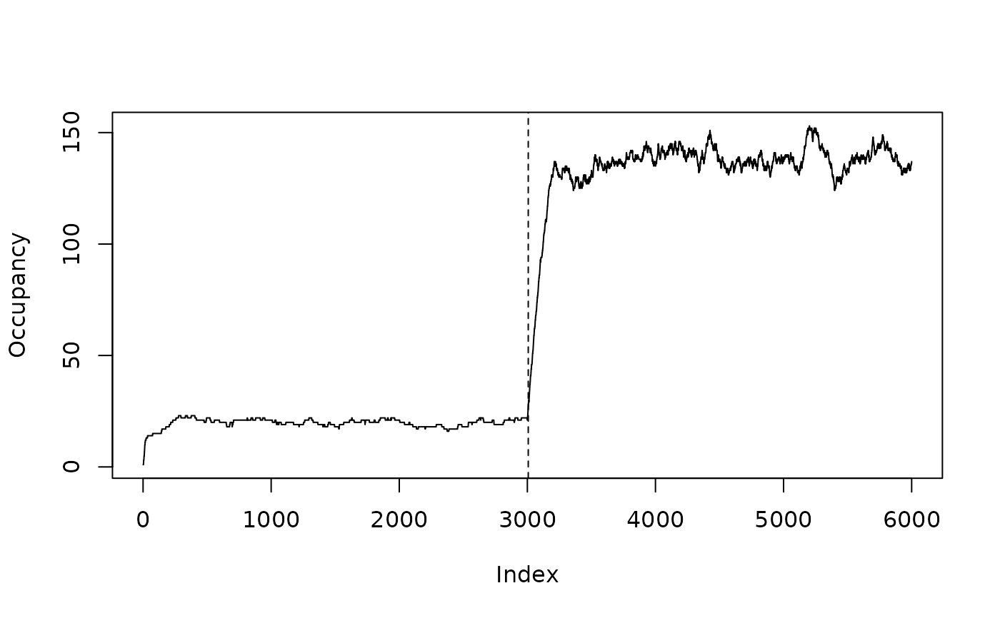

Unsupervised, model-independent detector that maps the most
recent observations onto a height-limited d-dimensional quadtree and
monitors its occupancy, the number of occupied leaves, as a univariate
curve (Ramos et al., 2024). A drift is signalled when the occupancy moves
away from the reference of the current concept or when its first
derivative changes. Since it monitors the distribution of the observed
features, it is primarily used for virtual concept drift.
Usage
dfr_qts(
target_feat = NULL,
height = 4,
window_size = 500,
reference_size = 1500,
recent = 0.1,
alpha = 1,
beta = 3,
lower = 0,
upper = 1,
derivative_rule = c("code", "paper")
)Arguments
- target_feat
Names of the columns to be monitored.
NULL(the default) monitors every numeric column.- height
Height of the quadtree: the number of times the feature space is halved along every dimension.
- window_size
Size of the sliding window
Wof observations mapped onto the quadtree.- reference_size
Size of the occupancy windows: the reference window
Rw, the summarized sliding windowSwand the derivative windowf'(Sw).- recent
Share of
window_sizethat forms the recent part of the derivative window (RD); the rest is the old part (OD).- alpha
Multiplier of the standard deviation of the old derivatives in the derivative strategy.
- beta
Multiplier of the standard deviation of the reference occupancy in the occupancy strategy.
- lower, upper
Bounds used to min-max scale the features to
[0, 1]before they are mapped, one value for every feature or one per monitored feature. The quadtree covers the unit hypercube; values outside it fall in the outermost cells. The defaults assume data already scaled to[0, 1].- derivative_rule
Drift condition of the derivative strategy.
"code"(the default) follows the reference implementation,|mean(RD)| > mean(OD) + alpha * sd(OD);"paper"follows the paper and its pseudocode,|mean(RD) - mean(OD)| > alpha * sd(OD).
Value
dfr_qts object. After fit(), obj$detections holds the
observation and the strategy ("occupancy" or "derivative") of every
drift, and drifter_output the occupancy, its moving average and the
derivative statistics of every observation.
Details
At each observation the window W is mapped onto a quadtree of
height height whose cells are split while they hold more than one
observation; the observations of a cell at the maximum height are
summarized by their mean. The occupancy is the number of leaves, so it grows
when the data spread over the feature space and shrinks when they
concentrate.
Once the window is full, the first reference_size occupancy values form
the reference window Rw of the concept. Two strategies then run in
parallel:
occupancy: a drift when the exponential moving average (span
reference_size) of the lastreference_sizeoccupancy values leavesmean(Rw) +/- beta * sd(Rw), a Chebyshev-like bound. The reference is replaced by the lastreference_sizevaluesreference_sizeobservations later.derivative: the derivative is the sign of the change of the occupancy (-1, 0 or 1). The last
reference_sizederivatives are split into old dataODand the lastrecent * window_sizevaluesRD, and a drift is signalled byderivative_rule. The reference is replacedwindow_size + reference_sizeobservations later, when both windows hold the new concept. While it waits, the occupancy strategy is paused.
When the window is small compared with the number of cells (2^(height d)),
nearly every observation has a leaf of its own, the occupancy rarely
changes and the standard deviation of the derivatives is small, so the
derivative strategy reacts to noise. Keep the default windows or lower the
height in that case.
The occupancy is computed from the cell counts of every level, without building the tree, and gives the same number of leaves as the reference implementation. The implementation follows the reference code (https://github.com/beraram/QTS-method), whose default parameters are used here; the paper recommends a window of 1000 observations for most cases. Rows whose monitored values are all missing are skipped; missing values in the other rows are placed in the lowest cell.
References
Ramos, B. A., Castro, C. L., Coelho, T. A. and Angelov, P. P. (2024). Unsupervised drift detection using quadtree spatial mapping. ESANN 2024 proceedings, 467-472.
Coelho, R., Torres, L. and Castro, C. (2023). Concept drift detection with quadtree-based spatial mapping of streaming data. Information Sciences, 625, 578-592.
Examples
library(daltoolbox)
library(heimdall)
# Two clusters in the unit square that spread over it after 3000 rows.
set.seed(1)
n <- 3000
before <- data.frame(x = stats::rnorm(n, 0.3, 0.05), y = stats::rnorm(n, 0.3, 0.05))
after <- data.frame(x = stats::runif(n), y = stats::runif(n))
model <- fit(dfr_qts(window_size = 200, reference_size = 600), rbind(before, after))
model$detections
#> observation strategy
#> 1 3007 derivative
plot(model$drifter_output$occupancy, type = "l", ylab = "Occupancy")
abline(v = model$detections$observation, lty = 2)
